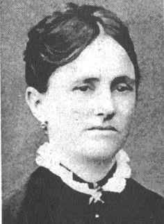
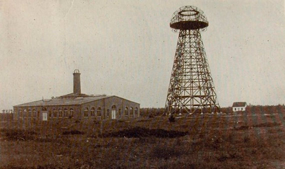

Nikola Tesla - The Electric Man

Early Life
Nikola was born in what is now Smiljan Croatia on July 10, 1856. He was one of five children to Milutin Tesla and Djuka Mandic. Milutin wanted Nikola to follow himself into presthood but Nikola was inspired by his mother who built small appliances in her free time. The sciences took a firm hold on Nikola's mind from a young age.
Nikola recalls that his knack for inventiveness first began by catching frogs. He and his friends would have contests to see who who could catch the most frogs. Much like everything else Nikola did in his life he took this opportunity to invent a new way of catching frogs! Naturally for Nikola his new method was far superior to his peers.
Education and Early Career
Young Nikola would attend several secondary education institutions starting with the Johann-Rudolph-Glauber Realschule Karlstadt. Furthering his education would bring him to The Polytechnic Institute in Graz.During his studies Nikola had the idea of an alternating current generator but this idea was always rejected by all of his peers and professors. His professors chaulked it up to a propetual motion machine which is known to be impossible. Finally, during the 1880's he attended the University of Prague but his attendence was curtailed after just one term due to the death of his father.After this tragic life event he decided to travel to Budapest.
Nikola began working under Tivadar Puskas for Central Telephone Exchange. During his time here he was promoted to cheif electrician and finally engineer due to his inventive mind and attention to detail. This is where the idea of the induction motor came to him but this never gained much traction so he moved to Paris to work for Continental Edison Company as an engineer.
Beginnings in America
Tesla then moved to New York to work with Thomas Alva Edison himself. Edison was focused solely on financial success while Tesla was driven by invention and innovation. Thw two did not get along at all so Tesla decided to leave and work George Westinghouse in 1885. While at George Westinghouse, Tesla devised an electrical distribution system that employed alternating current for the first time. Tesla's alternating current was used to power the World's Columbian Exposition in Chicago in 1893. Illuminating the city, this event got the name "the White City" and was the first time an entire city was useable at night.
A League of His Own
In 1885 Tesla recieved funding for his first company, Tesla Electric Light Company, but was forced out by his investors and was forced to do manual labor to stay afloat. Two years later, he started the Tesla Elecric Company and this time he was successful. Wireless energy transfer was Tesla's passion so in 1900 at the turn of the century Tesla began an enormous project; a free, global, wireless communication and energy network. Using the earth's magnetic field and a massive electrical tower, Tesla would provide all of Earth with power and a means of communicating. Backed by financial giant J.P. Morgan, Tesla picked a site for his transmission tower on Long Island, becoming known as Wardenclyffe.
Death
He ded
Contributions to Modern Society
- Alternating Current (HUGE ONE)
- Remote Control
- Wireless Communication and Charging
- Neon Signs
- X-rays
- Tesla Coil
- Radio
- Lasers
- Induction Motor